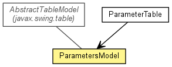

de.lmu.ifi.dbs.elki.gui.util
Class ParametersModel
java.lang.Object
 javax.swing.table.AbstractTableModel
de.lmu.ifi.dbs.elki.gui.util.ParametersModel
javax.swing.table.AbstractTableModel
de.lmu.ifi.dbs.elki.gui.util.ParametersModel
- All Implemented Interfaces:
- Serializable, TableModel
public class ParametersModel
- extends AbstractTableModel

A Swing TableModel that uses a DynamicParameters object as storage.
- See Also:
- Serialized Form
| Methods inherited from class javax.swing.table.AbstractTableModel |
addTableModelListener, findColumn, fireTableCellUpdated, fireTableChanged, fireTableDataChanged, fireTableRowsDeleted, fireTableRowsInserted, fireTableRowsUpdated, fireTableStructureChanged, getListeners, getTableModelListeners, removeTableModelListener |
| Methods inherited from class java.lang.Object |
clone, equals, finalize, getClass, hashCode, notify, notifyAll, toString, wait, wait, wait |
serialVersionUID
private static final long serialVersionUID
- Serial version
- See Also:
- Constant Field Values
logger
private static final Logging logger
- Logger
parameters
private DynamicParameters parameters
- Parameter storage
columns
public static final String[] columns
- Column headers in model
ParametersModel
public ParametersModel(DynamicParameters parameters)
- Constructor
- Parameters:
parameters - Parameter store
getColumnCount
public int getColumnCount()
getRowCount
public int getRowCount()
getValueAt
public Object getValueAt(int rowIndex,
int columnIndex)
getColumnName
public String getColumnName(int column)
- Specified by:
getColumnName in interface TableModel- Overrides:
getColumnName in class AbstractTableModel
getColumnClass
public Class<?> getColumnClass(int columnIndex)
- Specified by:
getColumnClass in interface TableModel- Overrides:
getColumnClass in class AbstractTableModel
isCellEditable
public boolean isCellEditable(int rowIndex,
int columnIndex)
- Specified by:
isCellEditable in interface TableModel- Overrides:
isCellEditable in class AbstractTableModel
setValueAt
public void setValueAt(Object value,
int rowIndex,
int columnIndex)
- Specified by:
setValueAt in interface TableModel- Overrides:
setValueAt in class AbstractTableModel